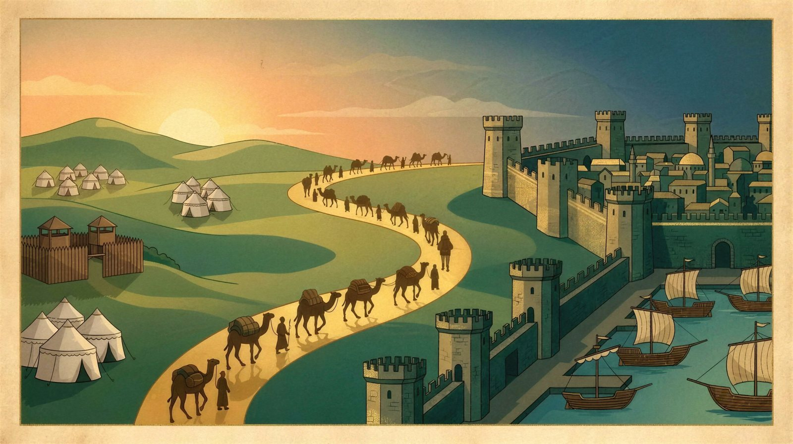
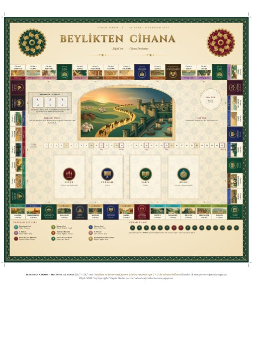
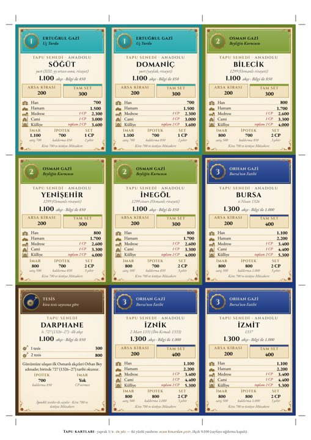
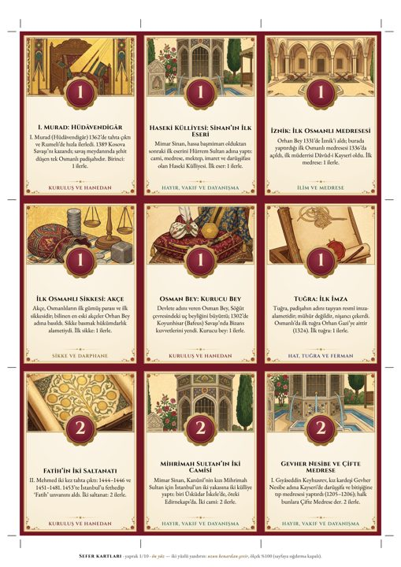
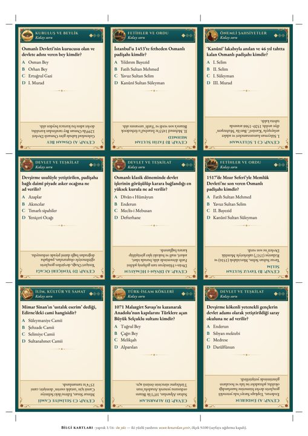
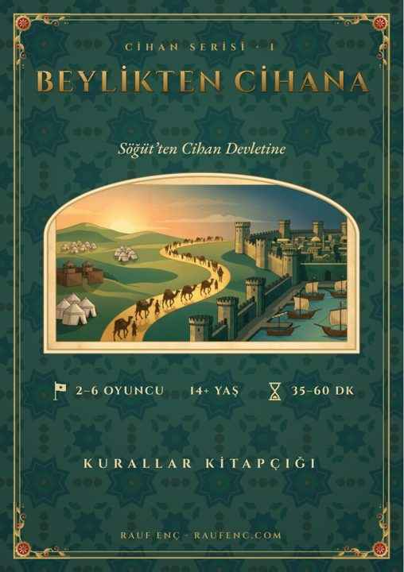
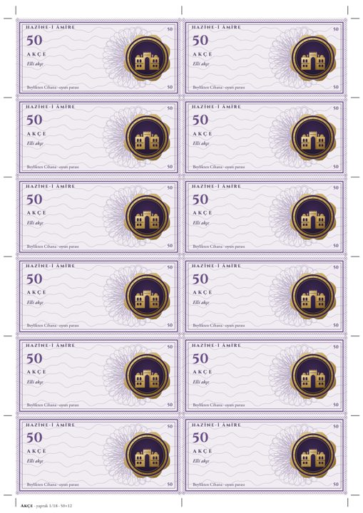
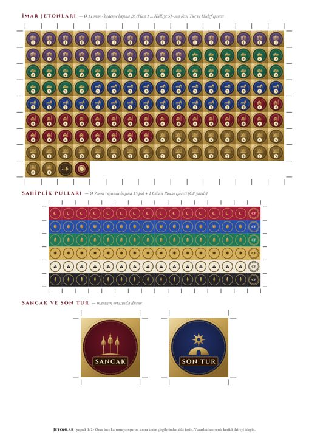
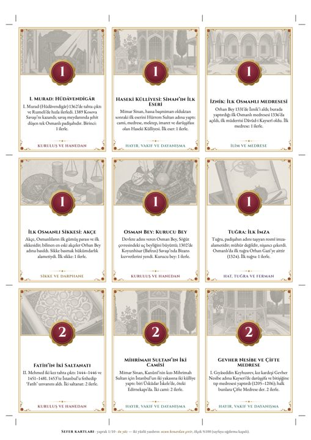

Beylikten Cihana
Basılı Set — evde bas, masada oyna

Dijital oyunun bütün içeriği, basılıp kesilmeye hazır: 46 karelik tahta, 344 kart, 216 akçe banknotu, jetonlar, kes-katla piyonlar ve 36 sayfalık kurallar kitapçığı. Zar yok, kumar yok; her el bir Sefer kartı ve bir tarih notu.
Dosyalar
İki set aynı oyunu verir. Renkli set tam renk ve koyu arka yüzlüdür; mürekkep dostu set açık zeminli ve gri görsellidir.
Nasıl basılır?
Bir öğleden sonralık iş: yaklaşık 60 A4 yaprak, bir makas ya da maket bıçağı, cetvel ve biraz karton.
Kâğıt
Kartlar için 200–250 g/m² mat bristol ya da fotokopi kartonu; akçe için normal 80–100 g kâğıt yeter. Tahta ve jetonları basıp ince kartona yapıştırın.
Yazıcı ayarı
Ölçek %100 / gerçek boyut; "sayfaya sığdır" kapalı. Kart dosyalarında iki yüzlü, uzun kenardan çevir. Kitapçıkta kısa kenardan. İlk yaprağı deneyip ön/arka hizasına bakın.
Tek yüzlü yazıcı
İki yüz basamıyorsanız "tek yüzlü yazıcı" dosyasını kullanın: ön ve arka yan yana; ortadaki kesikli çizgiden katlayıp yapıştırın, sonra kesin.
Kesim
Kartlar arasında boşluk yok: sayfa kenarındaki kesim işaretlerini cetvelle birleştirip giyotin ya da maket bıçağıyla düz kesin. 3 mm köşe yuvarlatıcı kartları kitap gibi gösterir.
Tahta
2 × 2 dosyada dört parçayı kesim çizgilerinden kesin, kenarları bitiştirip arkadan bantlayın ya da 2 mm mukavvaya yapıştırın (38,4 × 38,4 cm). A3 dosyası tek parça küçük tahtadır.
Jeton ve piyon
Jeton yapraklarını önce kartona yapıştırın, sonra kareleri düz kesin. Piyonları dış çizgiden kesin, kesikli çizgilerden katlayın, taban parçalarını üst üste yapıştırın.
Mürekkep
Renkli set koyu arka yüzler ve tam renkli tahta içerir. Mürekkep dostu set açık zeminli, ince çizgili ve gri tonlu görsellidir; aynı kurallarla aynı oyunu verir.
Önizleme
Sayfalardan örnekler (150 dpi).








Sette neler var?
- 1oyun tahtası (46 kare, 9 padişah seti)
- 31tapu kartı
- 85Sefer kartı
- 32Ferman ve Vak'a kartı
- 142Bilgi kartı (soru)
- 24Fermân-ı Hümâyun gizli görev
- 216akçe banknotu
- 130imar jetonu
- 96sahiplik pulu ve CP işareti
- 36mühür ve berat
- 12piyon (6 renk × 2 biçim)
- 30oyuncu ve rol kartı
- 36sayfa kurallar kitapçığı
- 24Ders cevap kartı
- 1Hızlı Başvuru, İlk Oyun Kurulumu, sayım tablosu, kronoloji posteri